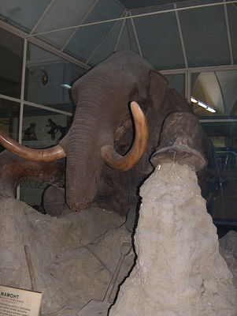

Das Berjosowka Mammut wurde 1900 (1901?) gefroren gefunden.
Es hatte noch 15 Kg (identifizierbare!) Nahrungsreste im Magen. Magensäuren und Enzyme zersetzen pflanzliche Nahrung innerhalb von Stunden.
Zersetzunsgprozess kann gestoppt werden, wenn die Temperatur innerhalb
von 10 Stunden auf ca 5 °C fällt. Dies ist aber nur möglich, wenn
die Temperatur an der Haut auf -115 °C fällt. Ein Mammut im
Eiskalten See würde zwar die Haut erhalten, aber der Zersetzungprozess
im Magen würde nicht schnell genug gestoppt.
Beinknochen in ca 12 Teile gebrochen, aber keine äusseren Anzeichen.
Fiel das Mammut in einen Eisspalt? (Gängige These)
Woher kam seine Nahrung in der Arktis? (Arktischer Winter: kaum Sonne).
Mammut starb an Erstickung.